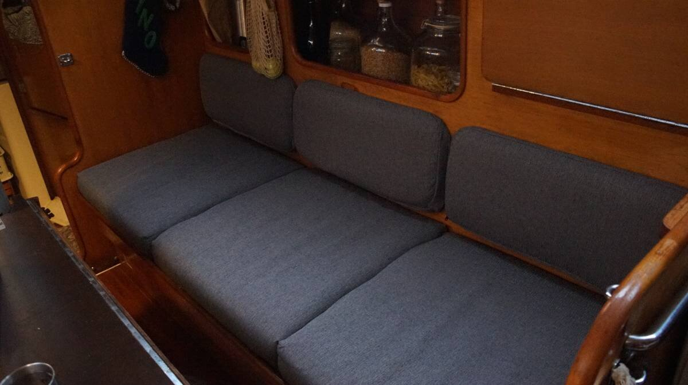
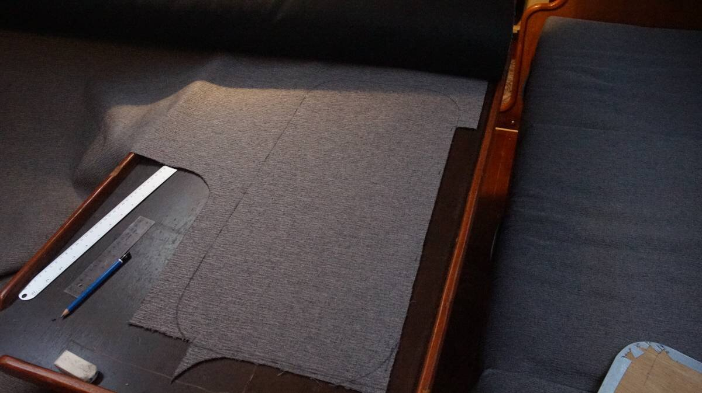
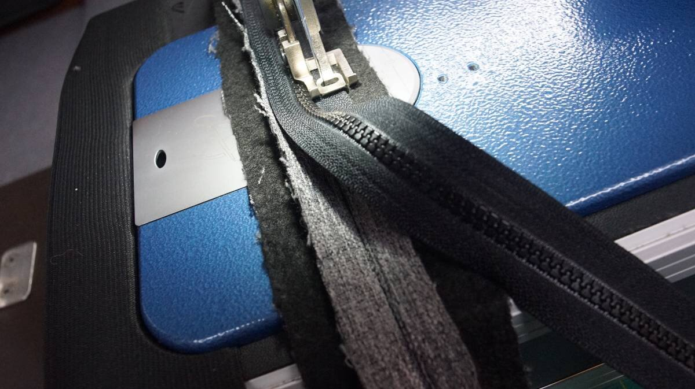

making seamed box cushions
2023.12.12
Victoria, BC, Canada.
Before:
After:
Pino's backrests consist of a cushion, varying from thick to thin(bottom to top), set onto a wooden backing board with rounded corners, the cover has a zipper(for easy removal), the back of the wooden board has a ball catch(to keep the locker closed) and two hinges at the bottom(to attach the door to the wall). We decided to make our backrests with seamed corners, instead of aiming for continuous boxing (mostly because the fabric doesn't have a pattern).
We re-used the existing foam.
This was the most complex sewing project(to date) aboard Pino. We followed a How to Make Salon Cushions tutorial by Sailrite to do it.
As with most boat projects, when making patterns, it is better to assume that no part of the boat is the same. We used the wooden cushion backing from each backrest, removing the cushion and cover each time to draw out a pattern on our fabric. The hinges and ball catch weren't always positioned the same, so the pattern cannot be drawn once and used as a base for the others.
Build list
For our backrest, we need...
- 1 top plaque
The top plaque should be 6.3 mm (1/4 in) larger on all sides than the finished cushion size. - 2 side boxing strips (that narrow at the top)
To determine the boxing width, measure the foam thickness(plus the backing) and add between 6.3 mm (1/4 in) to 19 mm (3/4 in). Boxing strips ought to be the same length as the sides of the backing board. Thinner cushions look best with more allowance, and thicker cushions with less. - 1 top boxing strip
This boxing strip ought to be a bit shorther than the width of the backing board(because it has rounded corners). - 1 zipper plaque(bottom boxing strip)
The width of the backing board and foam with the added width of the zipper. It should be measured to be slightly longer(length of plate edge x 2.6 cm|1.0125 in)to make up for possible shrinkage, which can happen when the zipper is sown on. - 1 bottom plaque(with 3 holes to accomodate the hardware)
Bottom plaque should be 6.3 mm (1/4 in) larger on all sides than the finished cushion size. - 1 YKK zipper
Cut the zipper long enough so that the wooden backing board can be inserted into the cover, usually the length of the zipper plaque.
General Tips
When measuring width of boxing strip. Place the foam overtop of the backing board, and compress the foam lightly with your hand to measure the width. Cushions look best when the cover is tight and compresses the cushion a little.
Rounded corners. When making the boxing of a backing board with rounded corners, take the curve into account when making patterns. The side or top boxing strips will have to be cut a bit shorter, which one is shorter depends on the look you want for the cushion and where you want the seam to be. A shorter top strip boxing will bring the seams along the top, a longer one can bring them lower along the bottom of the rounded corners, etc. On a square cushion with sharp corners the boxing will be the same length as the top and bottom plaque.
Seam allowance. For the top and bottom plaque add a seam allowance of 6.3 mm (1/4 in), when sewing make a 9.5 mm (3/8 in) seam. This will result in the plaques between slightly smaller than the pattern which makes the finished cushion covers fit tightly over the foam and backing.
Needle. Make sure the needle of your sewing machine matches the fabric, heavier-duty fabrics have different requirements.
Needle Pucker Phenomenon. The shrinkage of fabric due to sewing, even if everything is measured correctly, is still possible. The boxing may not match up to the top and bottom plaques even if they were the correct length. Adding extra allowance helps to protect against this. The type of fabric being sown, the sewing machine model being used, and how much you pull and tug while sewing, can create this phenomenon.
Pattern matching. If the fabric has a pattern that repeats(stripes, for examples) make sure that they will align how you want (see this Sailrite tutorial on how to match patterns on all sides). Care should be taken with fabrics that have a clear line direction but that don't need to match up perfectly. The line directions on the top plaque of the backrest ought to align with the ones on the top of the seat cushion.
STEP 1
Use the backing board(or foam) to draw the patterns on the fabric(checking that the pattern orientation is correct), with the correct seam allowance added, and cut the pieces with a pair of scissors. Using a knife that burns the edges would be even better, because it keeps the edges of synthetic fabrics from fraying(we don't have one though).
STEP 2
Sailrite made an excellent video about making a zipper plaque, watch it here, start video at 11:58 minutes.
To make a zipper plaque, fold the zipper plaque in half lengthwise(with the outside faces facing each other).
Place the zipper on top of the fold so the teeth of the zipper are centered on the fold, and mark the edge of the zipper fabric.
Draw a line across the whole length of the fabric, and then sew along that line using long stitches.
With a pair of scissors, cut along the fold all the way down the length (effectively splitting the zipper plaque in two).
Then, unfold the zipper plaque, bottom side up, and flatten the edges that were just cut. Put the zipper overtop, with the center of the zipper aligning with the centerfold of the fabric, and sew the edges on using a tighter stitch.
Turn the zipper plaque around and remove the stitches(why we chose longer stitches earlier on), this will reveal the zipper underneath.
This is what it looks like underneath:
There are many ways to install a zipper slider...
Using the narrow end: slide the narrow end, top side down, of the zipper slider on the end of the zipper teeth and push down on it, while pulling the two sides of the zipper apart. This is tricky to do since the zipper is already sown onto fabric but we did it a few times and it eventually always goes in.
Using the wide end: Open the zipper teeth(only a short length), add the wide end of the zipper through the teeth, top side down, making sure to feed both rows of teeth through the slots.
If the zipper track is a bit longer than the zipper plaque adding stitches to lock the slider on won't be necessary because the fabric will act as a stopper. If it is possible for the slider to come off, make a few stitches through the zipper on both ends (a good machine can go through it), or melt the end teeth with a lighter.
STEP 3
Time to joining the boxing ends together, but first, lay the zipper plaque alongside the top plate and make sure that they are the same length, if it's too long, cut a bit of fabric off. The same goes for the top boxing plate and the boxing sides. It is always better to dry fit the boxing strips first before sewing.
Sew the boxing together, with the outside faces facing each other(inside out) while giving 9.5 mm (3/8 in) seam allowance.
Test the finished boxing onto the backing board, sliding it around the edge to make sure that it fits. It is easier to make adjustments to the boxing strip at this point than later when the top and back plaque are sown on. If the boxing is too loose, undo the stitches from the side strips and cut a bit of fabric away on both sides.
STEP 4
Before sewing the top face of the cushion to the boxing, do yet another 'dry fit' onto the backing board by wrapping the boxing on the edges of the board and placing the top plaque on top. Add safety pins all around the two halves(corners first) to mark up where each side needs to go, winging it will only result in errors. Using basting tape is better (again, not something we have aboard right now).
Our backrests have rounded corners, so we don't need to lift the foot and turn the fabric to go around corners, but we do need to turn the fabric, while holding the two sides together as they are being fed through the machine. Because the side of our cushion is narrow at the top and wide at the bottom, going around corners can be a bit tricky, but trust the position of the safety pins(we remove them as we go), go slow and all will be fine.
If the corners don't match when sewing, don't bother continuing, stop and remove the stitches and start again so they match. If the first corner doesn't match all of the rest will be offset. It's possible to line up corners by making slight adjustments in the fabric by pulling or pushing the boxing as you sow, that's only fine with small offsets. Too many drastic pulls and pushes in fabric can cause wrinkles in the finished cushion.
STEP 5
Position the bottom plate on the boxing(with the top plate already adjoined), and add pins (or basting tape) to mark up where the edges need to meet.
Before sewing, we opened the zipper so that the cover can be flipped inside out afterward. We have 3 holes in the bottom plate, so forgetting to do this isn't too dramatic(we can still squeeze a hand in to undo the zipper, but it may be more difficult to get it open with another design).
STEP 6
Insert the backing board and foam!
A look at the finished and functional zipper plaque, with the backing board and foam inserted.
This photo shows the 3 holes on the back of the cushion. To make sure the edges won't unravel, fold in the edges, cut slits in the corners(diagonals) and sow them in. We burned the inside of the corners with a lighter so they wouldn't fray.
Helpful resources:
See our other upholstery projects: